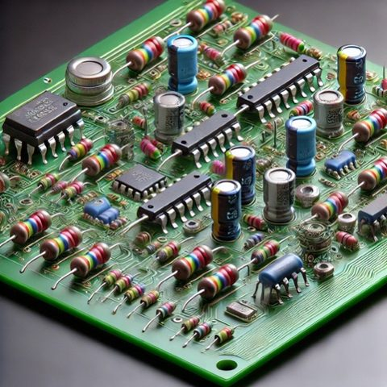
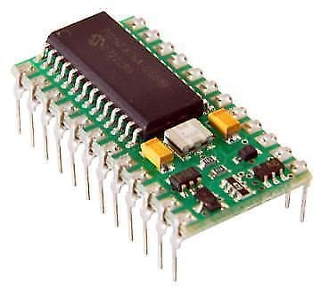
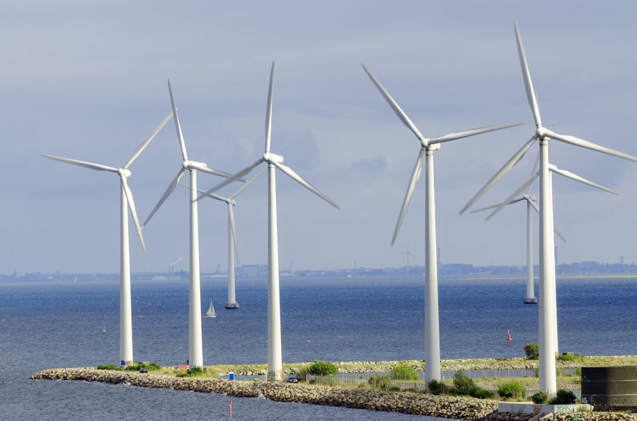

Section 1: Programmable Control at Higher
Programmable control systems are everywhere: robots on production lines, washing machines, games controllers, lifts, car engine management and the phone in your pocket. In every case a microcontroller takes in information from sensors, processes it according to a program, and sends signals to output devices.
At Higher the course specification asks you to develop control routines with up to four inputs and four outputs, to process analogue inputs, to use loops, time delays, logic and arithmetic to make decisions, and to control the speed of a motor using pulse-width modulation (PWM). You will not be asked to write whole programs from memory, but you must be able to draw flowcharts from a specification, and read program code, describe what it does and correct faults in it.
Microcontrollers and hard-wired circuits
A microcontroller is a programmable integrated circuit — a processor, memory and input/output pins in one small package. Most control circuits could instead be built from separate components such as resistors, transistors and logic gate chips. A circuit that cannot be programmed is called a hard-wired circuit, and for anything complex it becomes very large.


Because a microcontroller-based circuit needs far fewer components, it typically:
- costs less to make
- can be manufactured more quickly, as fewer connections need to be made
- is more reliable, as there are fewer components and connections to fail
- uses less power and produces less heat
- is smaller, so it fits into smaller products
- can be reprogrammed if a fault is found or new features are needed — a hard-wired circuit would have to be taken apart and rebuilt
- can be reprogrammed so that the same circuit is used in several different products.
Flowchart symbols
You should already know these symbols from National 5. The sub-procedure symbol is new for Higher — it is covered in Section 2.
- A process box is used for time delays (always with units, e.g. wait 2 s or wait 15 ms), for setting or changing variables (X = X + 1) and for storing a reading (store reading in X).
- An input/output box is used to switch an output (pin 7 on) and to read an analogue input (read pin 0).
- A decision box asks a yes/no question about an input (is pin 0 on?) or a variable (X > 200?). Both exits must be labelled Y and N.
- Exam papers refer to pins by number (pin 7 on, is pin 1 on?). Always use the pin numbers from the table you are given.
Infinite and finite loops
An infinite (continuous) loop repeats a section of the flowchart for ever. A finite loop repeats a section a set number of times, using a variable (here X) to count how many times the loop has run.
In the finite loop, X is set to 0 before the loop starts. Every time round, 1 is added to X and the decision checks whether X has reached 5. Only when it has does the program leave the loop.
Section 2: Reading and Correcting Program Code
A flowchart is turned into a program written in a high-level language. In Scottish schools the two you are most likely to meet are PBASIC (used with PICAXE chips and the Stamp Controller) and Arduino (a version of C++). Exam papers now show code in both languages side by side, and you can answer in whichever you prefer.
Commands you need to recognise
| Flowchart box | PBASIC | Arduino |
|---|---|---|
| pin 7 on / pin 7 off | high 7 / low 7 | digitalWrite(7, HIGH); / digitalWrite(7, LOW); |
| wait 500 ms | pause 500 | delay(500); |
| is pin 0 on? | if pin0 = 1 then label | if (digitalRead(0) == HIGH) { … } |
| wait until pin 0 is on | wait0: if pin0 = 0 then wait0 | while (digitalRead(0) == LOW) { } |
| X = 0, X = X + 1 | let b0 = 0, let b0 = b0 + 1 | x = 0;, x = x + 1; |
| finite loop (5 times) | for b0 = 1 to 5 … next b0 | for (int x = 1; x <= 5; x++) { … } |
| loop back to the start | goto main | the loop() function repeats automatically |
| call a sub-procedure | gosub pulse … return | pulse(); … void pulse() { … } |
| read pin 0, store reading in X | readadc 0, b1 | x = analogRead(A0) / 4; |
In PBASIC, a word followed by a colon (such as main:) is a label — a named point in the program that goto or if … then can jump to. Variables in PBASIC are called b0, b1, b2 and so on, or can be given names with symbol. In Arduino, the code in setup() runs once and the code in loop() repeats for ever.
main: if pin0 = 0 then main ' wait
for b0 = 1 to 5 ' 5 times
high 7
pause 1000
low 7
pause 1000
next b0
goto mainvoid setup() {
pinMode(0, INPUT);
pinMode(7, OUTPUT);
}
void loop() {
while (digitalRead(0) == LOW) { } // wait
for (int x = 1; x <= 5; x++) { // 5 times
digitalWrite(7, HIGH);
delay(1000);
digitalWrite(7, LOW);
delay(1000);
}
}In PBASIC, anything after an apostrophe ' is a comment; in Arduino it is anything after //. Comments are ignored by the microcontroller but help people read the program.
Sub-procedures
A sub-procedure (also called a subroutine or function) is a named block of instructions that can be used again and again from different parts of a program. The main program calls it; when the sub-procedure finishes it returns to the point it was called from. This keeps programs shorter and easier to read, and if the sub-procedure needs to change it only has to be changed in one place.
main: if pin0 = 0 then main
gosub pulse
pause 2000
goto main
pulse: high 7
pause 15
low 7
pause 45
returnvoid loop() {
while (digitalRead(0) == LOW) { }
pulse();
delay(2000);
}
void pulse() {
digitalWrite(7, HIGH);
delay(15);
digitalWrite(7, LOW);
delay(45);
return;
}A sub-procedure must always end with return, otherwise the program never gets back to the main routine.
You will not be examined on this, but it explains some lines you will see in PBASIC programs. A microcontroller’s pins are grouped into ports. The Stamp Controller uses port B, which has eight pins (b.0 to b.7) that can each be set as an input or an output.
The data direction register (dirsB) sets which pins are outputs (1) and which are inputs (0). The pin states can then all be set at once with pinsB. The % sign means a binary number follows; the first digit is pin 7 and the last is pin 0.
let dirsB = %11110000 ' pins 4-7 outputs, pins 0-3 inputs let pinsB = %11111111 ' all output pins high let pinsB = %00000000 ' all output pins low let pinsB = %10010000 ' pins 7 and 4 high, the rest low
Every pin is an input when the controller is reset, so a PBASIC program for the Stamp Controller normally begins with a let dirsB = line.
main: if pin0 = 0 then main
for b0 = 1 to 5
high 7
pause 1000
low 7
next b0
goto mainmain: if pin1 = 1 then main
high 6
pause 3000
low 6
goto mainmain: if pin0 = 0 then main
if pin1 = 1 then main
high 6
pause 500
low 6
goto mainvoid loop() {
if (digitalRead(0) == LOW) { return; }
if (digitalRead(1) == HIGH) { return; }
digitalWrite(6, HIGH);
delay(500);
digitalWrite(6, LOW);
}high 5 (b) pause 250 (c) gosub alarmOnly attempt this if you have read the “Beyond the exam” box above.
let pinsB = command to switch on: (a) pins 0 and 1 (b) pins 7, 6, 5 and 4 (c) pins 7, 5, 3 and 1let dirsB = command to: (a) set pins 7 and 6 as outputs and the others as inputs (b) set pins 6, 5 and 3 as outputs and the others as inputsSection 3: Monitoring Several Inputs
Many systems have to check several inputs before deciding what to do. An automatic door, for example, has to watch for people approaching from inside and outside. At Higher you can be asked to design control routines with up to four inputs and four outputs.
The key technique is to connect decision boxes one after another in a loop, so that each input is checked in turn, over and over, very quickly. The arrangement of the Y and N exits decides whether the inputs are combined with OR or AND.
- OR: if the first input is not on, the N exit goes on to check the next input. Every Y exit leads to the output. Only when every input is off does the flow loop back to the start.
- AND: each Y exit goes on to check the next input. Any N exit loops back. Only if every input is on does the flow reach the output.
- The same pattern extends to three or four inputs, and each input can lead to a different action instead of the same one (see the dragster task below).
From a Boolean expression to a flowchart
Exam questions sometimes describe a condition as a Boolean expression, linking this topic to Digital Electronics. For example, a lamp L (pin 7) comes on for 2 seconds when L = A + B — that is, when A is on or B is off.
Using the simulator
NoSyntaxSim has four inputs (IN_2 to IN_5) and four outputs (OUT_6 to OUT_9). Exam pin tables use pins 0 to 7, so in these notes every pin table has an extra column showing which simulator pin to use. The rule is simple: add 2 to the exam pin number. Pin 0 becomes IN_2, and pin 7 becomes OUT_9.
Task specifications
A — Flashing warning. An LED must flash 10 times (0.5 s on, 0.5 s off) after a switch is pressed. The system then waits for the switch again.
| Input | Pin | Output | NoSyntaxSim pin |
|---|---|---|---|
| switch | 0 | IN_2 | |
| 7 | LED | OUT_9 |
B — Forward and reverse. A motor must turn forwards while switch A is pressed and in reverse while switch B is pressed. When neither switch is pressed the motor must stop. The system must continuously repeat.
| Input | Pin | Output | NoSyntaxSim pin |
|---|---|---|---|
| switch A | 0 | IN_2 | |
| switch B | 1 | IN_3 | |
| 7 | motor forward | OUT_9 | |
| 6 | motor reverse | OUT_8 |
C — Pelican crossing. The traffic lights stay on green until a pedestrian presses the button. The lights then show amber for 3 s, then red for 10 s while pedestrians cross. Amber then flashes 5 times (0.5 s on, 0.5 s off) before the lights return to green.
| Input | Pin | Output | NoSyntaxSim pin |
|---|---|---|---|
| push button | 3 | IN_5 | |
| 7 | red | OUT_9 | |
| 6 | amber | OUT_8 | |
| 5 | green | OUT_7 |
D — Dragster race. A race for three model dragsters is started when the starter presses a switch, which switches on a green start light. A sensor at the end of each lane switches on when that lane’s dragster crosses it. A lamp must light to show the winning lane. After 10 seconds all lights switch off and the system waits for the next race.
| Input | Pin | Output | NoSyntaxSim pin |
|---|---|---|---|
| start switch | 0 | IN_2 | |
| lane 1 sensor | 1 | IN_3 | |
| lane 2 sensor | 2 | IN_4 | |
| lane 3 sensor | 3 | IN_5 | |
| 4 | green start light | OUT_6 | |
| 5 | lane 1 winner lamp | OUT_7 | |
| 6 | lane 2 winner lamp | OUT_8 | |
| 7 | lane 3 winner lamp | OUT_9 |
E — Office climate control. A fan must spin when the temperature rises above a set level, and a bank of LEDs must light when it gets dark. The temperature and light sensor circuits each give a digital signal (on = too hot, on = dark). Both must be checked continuously.
| Input | Pin | Output | NoSyntaxSim pin |
|---|---|---|---|
| temperature sensor | 0 | IN_2 | |
| light sensor | 1 | IN_3 | |
| 6 | LED bank | OUT_8 | |
| 7 | fan motor (12 V) | OUT_9 |
Section 4: Variables and Arithmetic
A variable is a named store in the microcontroller’s memory that holds a number. You have already used one to count round a finite loop. At Higher, variables are also used to count events, store sensor readings and hold the mark and space times for PWM. The program can do arithmetic on a variable and make decisions by comparing it with a number or with another variable.
| Operation | Flowchart box | PBASIC | Arduino |
|---|---|---|---|
| Set a value | X = 0 | let b0 = 0 | x = 0; |
| Increase by 1 | X = X + 1 | let b0 = b0 + 1 | x = x + 1; |
| Decrease by 1 | X = X - 1 | let b0 = b0 - 1 | x = x - 1; |
| Multiply by 3 | X = X × 3 | let b0 = b0 * 3 | x = x * 3; |
| Divide by 3 | X = X ÷ 3 | let b0 = b0 / 3 | x = x / 3; |
| Set X to half of Y | X = Y ÷ 2 | let b0 = b1 / 2 | x = y / 2; |
| Is X more than 5? | X > 5? | if b0 > 5 then label | if (x > 5) { … } |
| Are A and B equal? | A = B? | if b0 = b1 then label | if (a == b) { … } |
- Microcontroller variables hold whole numbers. Division throws away any remainder: 7 ÷ 2 gives 3, not 3.5.
- A PBASIC byte variable (
b0,b1…) can only hold 0 to 255. Adding 1 to 255 gives 0, and taking 1 from 0 gives 255, so check that your counts stay in range. - The comparisons you can use are =, >, <, >= and <=. Note that Arduino uses
==to compare and a single=to set a value.
Worked example — counting stock in a warehouse
A warehouse keeps track of the number of boxes on a shelf. A sensor on pin 0 switches on when a box is added, and a sensor on pin 1 switches on when a box is removed. The shelf starts with 20 boxes. When fewer than 5 boxes remain, a warning lamp on pin 7 must light.
let b0 = 20 ' 20 boxes to start
main: if pin0 = 1 then added
if pin1 = 1 then removed
goto check
added: if pin0 = 1 then added ' wait for the box to pass
let b0 = b0 + 1
goto check
removed: if pin1 = 1 then removed
let b0 = b0 - 1
check: if b0 < 5 then warn
low 7
goto main
warn: high 7
goto mainint x = 20; // 20 boxes to start
void setup() { pinMode(7, OUTPUT); }
void loop() {
if (digitalRead(0) == HIGH) {
while (digitalRead(0) == HIGH) { } // wait for the box to pass
x = x + 1;
}
if (digitalRead(1) == HIGH) {
while (digitalRead(1) == HIGH) { }
x = x - 1;
}
if (x < 5) { digitalWrite(7, HIGH); }
else { digitalWrite(7, LOW); }
}Task specifications
F — Car park. A car park holds 10 cars. A pressure sensor at the entrance switches on as each car enters, and one at the exit switches on as each car leaves. The barrier stays open until there are 10 cars inside, then closes. It opens again when a car leaves.
| Input | Pin | Output | NoSyntaxSim pin |
|---|---|---|---|
| entrance sensor | 0 | IN_2 | |
| exit sensor | 1 | IN_3 | |
| 7 | barrier (on = open) | OUT_9 |
G — Lift. A lift must count people coming in and going out. If there are 10 or fewer people inside when the ‘close’ button is pressed, the door motor runs for 3 seconds to close the door. If there are more than 10, an alarm must sound instead, and must stop as soon as there are 10 people or fewer inside.
| Input | Pin | Output | NoSyntaxSim pin |
|---|---|---|---|
| people in sensor | 0 | IN_2 | |
| people out sensor | 1 | IN_3 | |
| close button | 2 | IN_4 | |
| 6 | alarm | OUT_8 | |
| 7 | door motor | OUT_9 |
H — Drinks machine. A drinks machine has a separate slot for 5p, 10p and 20p coins, each with its own sensor. When at least 35p has been put in and the button is pressed, a can is given out (pin 7 on for 1 s). Any change is given out in 5p coins, with a lamp flashing once for each coin.
| Input | Pin | Output | NoSyntaxSim pin |
|---|---|---|---|
| 5p sensor | 0 | IN_2 | |
| 10p sensor | 1 | IN_3 | |
| 20p sensor | 2 | IN_4 | |
| button | 3 | IN_5 | |
| 6 | change lamp | OUT_8 | |
| 7 | can release | OUT_9 |
Section 5: Analogue Inputs
So far every input has been digital — on or off, high or low, 1 or 0. Many real sensors are analogue: their output can take any value in a range. A thermistor or LDR in a voltage divider, a potentiometer measuring an angle, or a speed sensor all give a voltage that varies smoothly. A games controller needs detailed information about exactly where a joystick is, not just whether it has moved.
Most microcontrollers have a built-in analogue-to-digital converter (ADC) on some of their input pins. The ADC converts the input voltage (0 V to 5 V) into a whole number from 0 to 255, which the program can store in a variable and then compare or use in calculations. 0 V gives a reading of 0, and 5 V gives 255.
Reading an analogue input in a flowchart
In an exam flowchart, taking an analogue reading is shown as two separate boxes: an input/output box to read the pin, then a process box to store the reading in a variable.
readadc 0, b1 ' read pin 0 and store in b1
x = analogRead(A0) / 4; // read A0 and store in x
An Arduino’s ADC gives 0 to 1023, so dividing by 4 gives the 0 to 255 range used in exam questions. NoSyntaxSim’s analogue sensor gives 0 to 255 directly.
main: if pin0 = 0 then main
high 6 ' lamp on
check: readadc 1, b0 ' read temperature into b0
if b0 > 200 then hot
low 7 ' fan off
goto check
hot: high 7 ' fan on
goto checkvoid setup() { pinMode(6, OUTPUT); pinMode(7, OUTPUT); }
void loop() {
while (digitalRead(0) == LOW) { }
digitalWrite(6, HIGH); // lamp on
while (true) {
int x = analogRead(A1) / 4; // temperature reading
if (x > 200) { digitalWrite(7, HIGH); } // fan on
else { digitalWrite(7, LOW); } // fan off
}
}Comparing two analogue readings
Two readings can be stored in two variables and compared with each other. A wind turbine, for example, can use one potentiometer to sense the wind direction (stored in A) and a second to sense which way the turbine is facing (stored in B). If A and B are different, a motor turns the turbine until they match.

Task specifications
I — Projector fan with a dead band. In the worked example the fan switches on and off rapidly when the reading sits around 200. Change the system so that the fan switches on when X is greater than 200, but only switches off again when X falls below 180. Between 180 and 200 the fan stays as it is.
J — Room lighting. As the outside light level falls, a system keeps the light level in a room constant by switching on more LEDs. The light sensor gives a low reading when it is dark.
- reading below 50: all four LEDs on
- reading 50 to 100: three LEDs on
- reading 101 to 150: two LEDs on
- reading 151 to 200: one LED on
- reading above 200: all LEDs off
| Input | Pin | Output | NoSyntaxSim pin |
|---|---|---|---|
| light sensor (analogue) | 0 | IN_2 | |
| 4 | LED 4 | OUT_6 | |
| 5 | LED 3 | OUT_7 | |
| 6 | LED 2 | OUT_8 | |
| 7 | LED 1 | OUT_9 |
K — Wind turbine. The reading from sensor A (wind direction) is stored in A and the reading from sensor B (turbine direction) in B. If A is greater than B the motor turns backwards. If A is smaller than B the motor turns forwards. If they are equal the motor stops. The system repeats continuously.
| Input | Pin | Output | NoSyntaxSim pin |
|---|---|---|---|
| sensor A (analogue) | 0 | IN_2 | |
| sensor B (analogue) | 1 | IN_3 | |
| 6 | motor reverse | OUT_8 | |
| 7 | motor forward | OUT_9 |
Section 6: Motor Speed Control — Pulse-Width Modulation
Many control systems need to change the speed of a motor. There are two ways to do this:
- change the size of the voltage applied to the motor, or
- switch the motor fully on and fully off very rapidly.
A microcontroller output pin can only be at 0 V or 5 V, so it cannot vary the size of the voltage. Instead it uses the second method, called pulse-width modulation (PWM). If the switching happens many times a second, the motor’s inertia smooths out the pulses and it turns at a steady speed.
Mark, space and mark to space ratio
- The time the output is on is called the mark.
- The time the output is off is called the space.
- The mark to space ratio compares the two. The longer the mark compared with the space, the more energy is delivered to the motor and the faster it turns.
- The duty cycle is the mark as a percentage of one complete pulse (mark + space).
Advantages and limitations of PWM
- Torque is maintained at all speeds. Each pulse applies the full supply voltage, so the motor still produces its full turning force even at low speed. Reducing the voltage instead also reduces the torque, so a slow motor may stall under load.
- The output driver (a transistor or MOSFET) is either fully on or fully off, so very little energy is wasted as heat in it.
- PWM cannot be used with a mechanical relay: the rapid switching would quickly wear out (and spark) the relay contacts. A transistor or MOSFET driver must be used.
- The frequency of the pulses must be chosen carefully. If the pulses are too slow, the motor speeds up and slows down with each pulse, runs jerkily and may stall.
PWM in a flowchart and in code
In a flowchart, PWM is simply: output on, wait for the mark, output off, wait for the space, repeat. Storing the mark and space in variables makes it easy to change the speed later.
symbol mark = b1
symbol space = b2
symbol motor = 7
init: let dirsB = %11110000 ' pins 4-7 outputs
let mark = 10 ' mark 10 ms
let space = 20 ' space 20 ms
main: high motor
pause mark
low motor
pause space
goto mainint mark = 10; // mark 10 ms
int space = 20; // space 20 ms
void setup() { pinMode(7, OUTPUT); }
void loop() {
digitalWrite(7, HIGH);
delay(mark);
digitalWrite(7, LOW);
delay(space);
}Here the space is twice the mark, so the motor runs at about a third of full speed.
Arduino boards also have a built-in hardware PWM command, analogWrite(pin, value), where the value 0 to 255 sets the duty cycle, and NoSyntaxSim’s output box has a Set PWM option that does the same. In exam questions, however, PWM is always shown with separate on, wait, off and wait steps, so practise drawing it that way.
Section 7: Changing Speed Under Program Control
Because the mark and space are stored in variables, the program can change them while it runs. This lets a motor accelerate smoothly, respond to buttons, or be controlled by a sensor reading. These ideas appear in almost every Higher paper.
Accelerating a motor (soft start)
A heavy load such as a conveyor or ski tow should not be jerked into motion at full power. Instead, the program starts with a short mark and long space, then lengthens the mark and shortens the space a little on every pulse until the motor reaches full speed. Keeping mark + space constant keeps the frequency constant.
let b1 = 2 ' mark
let b2 = 18 ' space
ramp: high 7
pause b1
low 7
pause b2
let b1 = b1 + 1
let b2 = b2 - 1
if b1 < 20 then ramp
high 7 ' full speedvoid setup() {
pinMode(7, OUTPUT);
int mark = 2, space = 18;
while (mark < 20) {
digitalWrite(7, HIGH); delay(mark);
digitalWrite(7, LOW); delay(space);
mark = mark + 1;
space = space - 1;
}
digitalWrite(7, HIGH); // full speed
}
void loop() { }Closed-loop speed control
If the load on a motor changes — a lift that fills with people, or a forklift raising a heavy pallet — its speed will change too. A speed sensor can feed the actual speed back to the microcontroller, which compares it with the desired value and adjusts the mark and space to correct any error. This is closed-loop control, which you met in the Systems Approach.
Setting the mark directly from a reading
Another approach uses the reading itself as the mark. If the reading X is 0 to 255 and every pulse is 255 ms long, then mark = X and space = 255 - X. A higher reading gives a longer mark and a faster motor.
Brightness control
PWM works just as well for lamps and LEDs. Switching a bank of LEDs rapidly through a MOSFET changes their brightness: a longer mark makes them brighter. The eye cannot see the flicker as long as the pulses are fast enough.
Task specifications
L — Food mixer. The user must be able to adjust the speed of a food mixer.
- Mark and space are both initially set to 10 ms.
- When the ‘faster’ switch is pressed, the mark increases by 1 ms and the space decreases by 1 ms.
- When the ‘slower’ switch is pressed, the mark decreases by 1 ms and the space increases by 1 ms.
- A PWM signal is sent to the motor using the mark and space.
- The speed adjustment and pulses continue until the stop switch is pressed.
| Input | Pin | Output | NoSyntaxSim pin |
|---|---|---|---|
| stop switch | 0 | IN_2 | |
| faster switch | 1 | IN_3 | |
| slower switch | 2 | IN_4 | |
| 7 | motor | OUT_9 |
main: readadc 0, b0
if b0 < 60 then bright
if b0 < 160 then medium
let b1 = 1 ' mark
let b2 = 9 ' space
goto pulser
bright: let b1 = 9
let b2 = 1
goto pulser
medium: let b1 = 5
let b2 = 5
pulser: high 7
pause b1
low 7
pause b2
goto mainSection 8: Exam-Style Questions
These questions are written in the style of the Higher question paper. Set yourself a time limit of about 1.5 minutes per mark, answer on paper or in the boxes, then check your work against the model answers.
Question 1 — Airport baggage conveyor
A baggage conveyor at an airport uses pulse-width modulation to accelerate smoothly to its working speed. The control sequence has the following steps:
- Initially the MARK = 5 ms and the SPACE = 15 ms.
- Each new pulse increases the MARK by 1 ms and decreases the SPACE by 1 ms.
- The acceleration continues until the MARK reaches 20 ms.
- The motor is then switched on continuously.
- The motor stops when the emergency stop is pressed (high) or the override switch is released (low).
- A brake is then applied for 3 seconds.
- The sequence repeats.
| Input | Pin | Output |
|---|---|---|
| emergency stop (pressed = 1) | 0 | |
| override switch (released = 0) | 1 | |
| 6 | brake | |
| 7 | motor |
Question 2 — Loading a ferry car deck
A ferry company uses a microcontroller to control the loading of cars onto its car deck, which has space for 30 cars. Cars with bookings wait behind a barrier; cars on standby wait behind a gate. A single sensor at the top of the ramp counts every car that boards.
- The operator presses the start switch to begin loading. The count is set to 0 and the barrier opens.
- The sensor gives a high signal each time a car passes, and the count increases by 1.
- If the deck is full (30 cars), the barrier closes.
- If the deck is not full when the operator presses the standby switch, the barrier closes and the gate opens to let standby cars on until the deck is full. The gate then closes.
- When loading is finished, the operator presses the ramp switch, and the ramp motor runs for 20 seconds to raise the ramp.
- The system then returns to the start.
| Input | Pin | Output |
|---|---|---|
| sensor | 0 | |
| standby switch | 1 | |
| start switch | 2 | |
| ramp switch | 3 | |
| 5 | ramp motor | |
| 6 | gate (open = high) | |
| 7 | barrier (open = high) |
Question 3 — Hydro scheme sluice gate
A small hydro-electric scheme uses a motor to open a sluice gate when the water in the reservoir is high. The code is written to meet the following specification:
- If the enable switch is on and the level sensor detects high water, the sluice motor runs.
- The motor runs slowly using PWM with a mark to space ratio of 1:4, using a mark of 10 ms.
- The sequence repeats.
| Input | Pin | Output |
|---|---|---|
| enable switch | 0 | |
| level sensor (high water = 1) | 1 | |
| 7 | sluice motor |
Part of the program is shown below in PBASIC and Arduino. Two faults are shown in bold.
main: if pin0 = 1 then main
if pin1 = 0 then main
gosub pwm
goto main
pwm: high 7
pause 10
low 7
pause 20
returnvoid loop() {
if (digitalRead(0) == HIGH) { return; }
if (digitalRead(1) == LOW) { return; }
pwm();
}
void pwm() {
digitalWrite(7, HIGH);
delay(10);
digitalWrite(7, LOW);
delay(20);
return;
}Section 9: Design Challenges
For each challenge, follow the full engineering process: read the specification carefully, plan a flowchart on paper, then build it in NoSyntaxSim. Test every point of the specification, not just the obvious one. Finally, evaluate your system: does it fully meet the specification, and what would you improve?
Challenge 1 — Ski tow at Glenshee
A ski centre in the Cairngorms is upgrading the control system for one of its rope tows. Skiers are pulled up the slope on the rope, so it must never start with a jerk.
| Input | NoSyntaxSim pin | Output |
|---|---|---|
| start button | IN_2 | |
| stop button | IN_3 | |
| OUT_8 | warning beacon | |
| OUT_9 | tow motor |
| i | When the operator presses the start button, the warning beacon flashes 3 times (0.5 s on, 0.5 s off). |
|---|---|
| ii | The tow motor then starts with a mark of 2 ms and a space of 18 ms. |
| iii | On every pulse the mark increases by 1 ms and the space decreases by 1 ms, until the mark reaches 18 ms. |
| iv | The motor then continues to run at that speed. |
| v | If the stop button is pressed at any time while the motor is running, the motor stops and the system waits for the start button again. |
Challenge 2 — Polytunnel ventilation on an Orkney croft
A crofter in Orkney grows salad crops in a polytunnel. On sunny days it overheats, so a ventilation fan is to be fitted. To save energy, the fan speed should depend on how hot it is — and when it rains the fan must stop, as the vents have to close.
| Input | NoSyntaxSim pin | Output |
|---|---|---|
| temperature sensor (analogue) | IN_2 | |
| rain sensor | IN_3 | |
| OUT_7 | rain warning lamp | |
| OUT_9 | fan motor |
| i | The temperature is read and stored in a variable T. |
|---|---|
| ii | T below 100: fan off. |
| iii | T from 100 to 159: fan runs with mark 5 ms, space 15 ms. |
| iv | T from 160 to 209: fan runs with mark 10 ms, space 10 ms. |
| v | T of 210 or more: fan runs at full speed. |
| vi | If the rain sensor is on, the fan stops and the rain warning lamp lights. The lamp goes off again when the rain stops. |
| vii | The system repeats continuously. |
Challenge 3 — Bottling line at a Speyside distillery
A distillery in Speyside is automating the end of its bottling line. Every bottle is checked to make sure it has been filled properly, and good bottles are packed in cases of 12.
| Input | NoSyntaxSim pin | Output |
|---|---|---|
| bottle sensor | IN_2 | |
| fill-level sensor (analogue) | IN_3 | |
| stop switch | IN_4 | |
| OUT_8 | reject pusher | |
| OUT_9 | case-sealing motor |
| i | When the bottle sensor detects a bottle, the fill level is read and stored in L. |
|---|---|
| ii | If L is less than 180, the bottle is under-filled: the reject pusher operates for 1 second. |
| iii | Otherwise the bottle is counted as good. |
| iv | When 12 good bottles have been counted, the case-sealing motor runs for 3 seconds and the count is reset. |
| v | Each bottle must only be counted once. |
| vi | The system stops when the stop switch is pressed. |